Painel do Gestor Comercial
Borges Macedo Advocacia
Login
Senha
Entrar
Acesso restrito a gestao comercial.
As planilhas de origem ficam em cofre cifrado (AES-256-GCM).
☰
Visao Geral
—
Filtros
Lendo as planilhas…